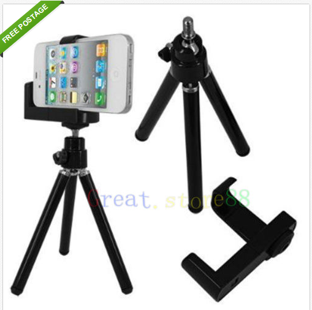
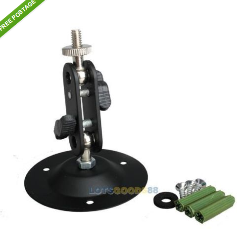

Wireless camera system on a budget
Michael Pope (@map7)
MLUG Feb, 2014
Disclaimer
- Wireless cameras are not fool proof
- Batteries in old phones are unreliable
Re-use
- Old/Smashed phones
- Network/computers already there
- Use USB cameras 'mjpg_streamer'
Hardware used
- OLD android mobile phones
- Phone to camera mount
- Ceiling brakets
- WIFI Router
- Linux box (recording)
Phone mount
$7 from ebay
Bracket
$2.30 from ebay
Android phone server
- IP Webcam
- Android 1.6+
- Load through 'adb install IP\ Webcam.apk'
Android phone viewing
- IP Cam Viewer (Basic/Lite/Pro)
- Basic/Lite are Free
- View heaps of cameras at once
Recording software 'Motion'
- Fast
- Low resources
- no dependencies
- flexible
- Uses mpeg/jpg output
Recording setup
- Settings in /etc/motion/motion.conf
- Balance file size vs performance
- Make sure it starts on boot
Enable on boot
/etc/default/motionstart_motion_daemon=yes
Example motion.conf
# ffv1 codec works best
ffmpeg_video_codec ffv1
netcam_url http://10.0.0.100:8080/videofeed
target_dir /media/data/recordings
width 640
height 480
framerate 15
# View video feed from any computer
control_localhost off
Remove old recordings
# Remove over 60 days, put into /etc/crontab
/usr/bin/find /recordings -mtime +60 -exec rm {} \;
Multi-camera setup
- Use a separate config per camera (thread1.conf)
- Just enter the differences
Multi-camera example
netcam_url http://10.0.0.101:8080/videofeed
target_dir /media/data/recordings/kitchen
webcam_port 8081
Recording requirements
- Spare computer running Linux
- About 1GB per day per camera